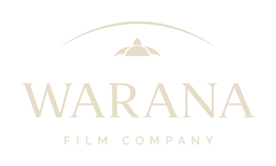

Proposal · August 2026
Bart Willemsen is developing eight films and series. One of them, Kachhua, is in funded development with a London co-producer and a BAFTA-winning writer. None of it is visible anywhere. This is what it looks like when it is.
Four parts
The first one is what a financier would see. The other three are the work behind it.
A beach in Mumbai you can drag from 2015 to 2018 with your thumb. Kachhua, all eight titles with a status filter, the €20 million as a stack, and a working way to book a call.
Open the pitch page → TwoWarana already has a house style. Nobody had written it down. Colour, type, image rules, and three before-and-afters using Bart's own sentences.
Open the brand book → ThreeAn Instagram grid of nine posts instead of two. Three stories that build to one link. Three LinkedIn posts over three weeks, from no ask to the real one.
Open the social plan → FourEight kinds of money for one slate, sorted by how certain each one is — and what has to be on the table before you knock on each door.
Open the funding map →Reading the slate
None of this is invented. It was all sitting in the deck, in the logo, and on IMDb — just never named.
Warana is the company; Kachhua is the film — Hindi for turtle. It is in co-production with SunnyMarch in London, in development with Grain Media, written by Ayub Khan Din, who wrote East is East. Status: funded development, writer attached. That is the furthest-advanced thing on the entire slate and it appears nowhere online.
Every title in the deck carries its own colour wash over the image. Eight colours, used consistently, never named. That is a working brand system that happened by accident. In the brand book I pulled them out of the file and gave each one a name.
An arc with a small winged shape underneath — a horizon with a bird above the sea. That is Kachhua, drawn into a logo that sits on a website where Kachhua does not appear.
About Máxima he wrote: "the international ambition of the project and the royal richness of the script grabbed me immediately… cast and crew from different countries." Word for word, that is the profile of Kachhua. He can say it clearly the moment it is not about him.
Before anything goes further
The slate says "in co-production with SunnyMarch, London", and that is exactly how it appears here. SunnyMarch is publicly known as Benedict Cumberbatch's production company. A company-level co-production is a different claim from an actor attaching himself to a film, and financiers hold you to that difference. His name is nowhere on these pages until Bart says what is actually signed.
Bart never said he is raising €20 million. The figure came from the brief, and I built a credible stack around it to show what a sum like that looks like in practice. The percentages and ceilings in it are real and checked. The split is illustrative. If the real number is €6 million, the page only gets stronger.
Eight unannounced titles, an IP licence still under negotiation, and a project being developed with a suicide-prevention foundation. All of it carries a noindex tag and is excluded from the sitemap, so search engines leave it alone. The link works for anyone Bart chooses to send it to. Whether it ever becomes public is his call, not mine.
Voorstel · augustus 2026
Bart Willemsen ontwikkelt acht films en series. Eén daarvan, Kachhua, is in gefinancierde ontwikkeling met een Londense coproducent en een BAFTA-winnende schrijver. Daar is nergens iets van te zien. Zo ziet het eruit als dat wel zo is.
Vier onderdelen
Het eerste is wat een financier zou zien. De andere drie zijn het werk daarachter.
Een strand in Mumbai dat je met je duim van 2015 naar 2018 sleept. Kachhua, alle acht titels met een statusfilter, de €20 miljoen als stapel, en een werkende manier om een gesprek te plannen.
Open de pitchpagina → TweeWarana heeft al een huisstijl. Niemand had hem opgeschreven. Kleur, letters, beeldregels, en drie keer voor-en-na met Barts eigen zinnen.
Open het merkboek → DrieEen Instagram-raster van negen posts in plaats van twee. Drie stories die naar één link lopen. Drie LinkedIn-posts over drie weken, van geen vraag naar de echte.
Open het socialplan → VierAcht soorten geld voor één slate, gesorteerd op hoe zeker ze zijn — en wat er moet liggen voordat je bij elke deur aanklopt.
Open de financieringskaart →Bij het lezen van de slate
Niets hiervan is verzonnen. Het zat allemaal al in de deck, in het logo en op IMDb — alleen nooit benoemd.
Warana is het bedrijf; Kachhua is de film — Hindi voor schildpad. De film is een coproductie met SunnyMarch in Londen en wordt ontwikkeld met Grain Media. De schrijver is Ayub Khan Din, die East is East schreef. Status: gefinancierde ontwikkeling, schrijver verbonden. Dat is het verst gevorderde project van de hele slate en het staat nergens online.
Elke titel in de deck heeft een eigen kleurwaas over het beeld. Acht kleuren, consequent gebruikt, nooit benoemd. Dat is een werkend merksysteem dat per ongeluk is ontstaan. In het merkboek heb ik ze uit het bestand gelezen en elk een naam gegeven.
Een boog met een klein gevleugeld vormpje eronder — een horizon met een vogel boven zee. Dat is Kachhua, getekend in een logo dat op een website staat waar Kachhua niet op voorkomt.
Over Máxima schreef hij: "de internationale ambitie van het project en de koninklijke rijkheid van het script grepen mij direct aan… cast en crew uit verschillende landen." Woord voor woord is dat het profiel van Kachhua. Hij kan het scherp formuleren zodra het niet over hemzelf gaat.
Voordat dit ergens heen gaat
De slate zegt "in coproductie met SunnyMarch, Londen", en zo staat het hier ook. SunnyMarch is publiek bekend als het productiebedrijf van Benedict Cumberbatch. Een coproductie op bedrijfsniveau is iets anders dan een acteur die zich aan een film verbindt, en op dat verschil word je afgerekend. Zijn naam staat nergens op deze pagina's tot Bart zegt wat er werkelijk getekend is.
Bart heeft nergens gezegd dat hij €20 miljoen zoekt. Dat getal kwam uit de opdracht, en ik heb er een geloofwaardige stapel omheen gebouwd om te laten zien hoe zo'n bedrag er in de praktijk uitziet. De percentages en plafonds erin zijn echt en nagekeken. De verdeling is een voorbeeld. Als het werkelijke bedrag €6 miljoen is, wordt de pagina alleen maar sterker.
Acht nog niet aangekondigde titels, een IP-licentie die nog in onderhandeling is, en een project dat wordt ontwikkeld met een stichting voor zelfmoordpreventie. Alles draagt een noindex-tag en staat niet in de sitemap, dus zoekmachines laten het met rust. De link werkt voor iedereen aan wie Bart hem stuurt. Of het ooit openbaar wordt, is zijn beslissing en niet de mijne.